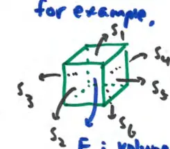

17.8 The Divergence Theorem (part 1)
divergence: \( \text{div } \vec{F} = \vec{\nabla} \cdot \vec{F} \)
\[ \text{div } \vec{F} = \left\langle \frac{\partial}{\partial x}, \frac{\partial}{\partial y}, \frac{\partial}{\partial z} \right\rangle \cdot \langle f, g, h \rangle = f_x + g_y + h_z \]
\( \iiint_E \text{div } \vec{F} \, dV \) accumulates the divergence inside an enclosed volume
Divergence Theorem
\[ \iiint_E \text{div } \vec{F} \, dV = \iint_S \vec{F} \cdot d\vec{S} = \iint_S \vec{F} \cdot \vec{n} \, dS \]
- E: enclosed volume
- S: the surface bounding the volume (closed surface)
for example, for a cube

- S: the six sides of the cube
- E: volume inside